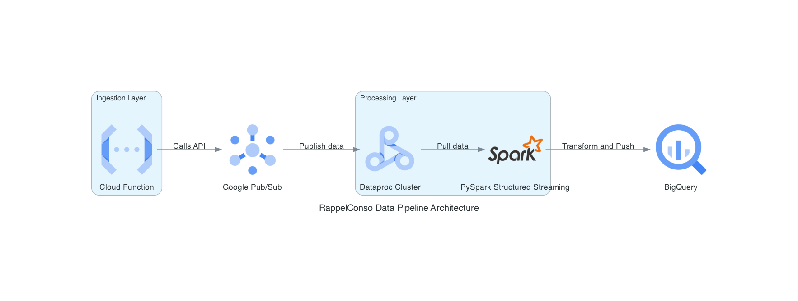

Architecture Diagram
The RappelConso Data Pipeline is designed to provide a robust, real-time data processing solution for managing and analyzing product recall information. The core concept is to automate the entire lifecycle of recall data—starting from ingestion, through transformation, to analysis—ensuring that stakeholders can access the latest information with minimal delay. This pipeline fetches data from the French government’s RappelConso API, simulates streaming, and processes the data using advanced cloud technologies. The ultimate goal is to deliver actionable insights through dynamic dashboards, enabling swift decision-making in response to product recalls.
The data processed in this pipeline originates from the RappelConso API, which provides detailed information on product recalls in France, including product categories, risks, recommendations, and distributor details. The data is initially fetched in its raw format, containing fields that are often in French and need cleaning, merging, and translation for effective analysis. Each record is enriched through multiple transformations, including text normalization, risk categorization, and translation into English, making the data more accessible and meaningful for diverse stakeholders. The processed data is then stored in BigQuery, partitioned by publication date, allowing for efficient querying and historical analysis.
The approach leverages a modular and scalable architecture that integrates several Google Cloud services to handle the complexities of real-time data processing. Cloud Functions serve as the ingestion layer, periodically calling the RappelConso API and publishing the data to Pub/Sub Lite, simulating a streaming environment. Dataproc with PySpark Structured Streaming is used to pull data from Pub/Sub, apply complex transformations, and create multiple DataFrames to support different analytical needs. The processed data is then pushed to BigQuery, where it can be easily accessed for analysis and visualization in tools like Google Looker. This approach ensures data integrity, scalability, and the ability to handle varying data volumes efficiently.
The project utilizes a combination of algorithms and tools to ensure data is processed accurately and efficiently